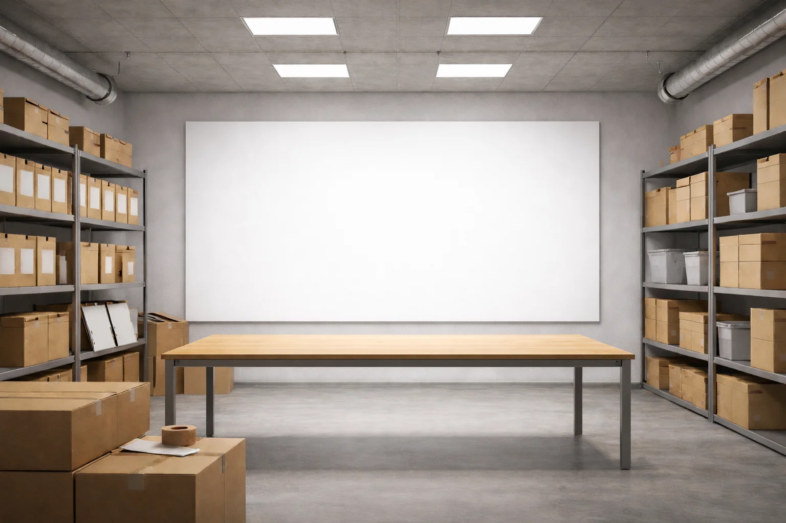

Donating to the Archive
We are actively looking to expand and develop our archive collections: supporting teaching and research within the university, filling in the blanks of our institution’s history and opening up our collections for researchers everywhere.
We are always keen to hear about any documents or objects that relate to the history of Edge Hill and might help tell our story. If you have any photographs, films, correspondence, journals, publications, mementos or other items that might be of interest and that you are willing to donate to us, please get in touch.
Our archive and special collections also include items and publications that do not have a direct connection to the history of Edge Hill, but match the research interests of the university.
We are very interested in receiving donations of archive collections and/or publications that could support research in areas including the arts and creative industries, science and the humanities, sport, law, education, health, social care and medicine. For more information on the research interests of the university please see the university’s website.
For further information and to find out more about the donation options available to you, please get in touch.